Gafsa – Oasis d’histoire au cœur du sud-ouest
Le Gouvernorat de Gafsa est situé dans le centre-ouest de la Tunisie et est réputé pour son activité minière, possédant l'un des plus importants gisements de phosphate au monde. Bien que l'exploitation minière soit le secteur d'activité prédominant, on y trouve également de l'agriculture, notamment des oliviers et des céréales, et une activité touristique liée à son histoire ancienne et ses paysages uniques.
Gafsa est une ville oasis située dans l'arrière-pays tunisien. La région bénéficie d'un climat désertique, caractérisé par des étés très chauds et des hivers doux. La topographie locale présente des caractéristiques uniques, avec une forte identité rurale.
L'histoire de Gafsa est riche, remontant à l'Antiquité, sous le nom de Capsa. Son ancien nom fait référence à l'industrie capsienne mésolithique (datée localement d'environ 6250 av. J.-C.) de ses premiers habitants. La ville a une importance stratégique qui s'est maintenue à travers les époques. Les événements de Gafsa en 1980 sont également un point marquant de l'histoire moderne de la région.
Un lieu d'intérêt naturel et paisible, idéal pour une promenade et pour voir l'agriculture locale dans un environnement d'oasis.
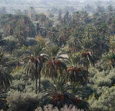
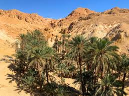
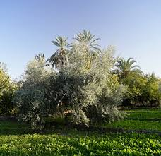
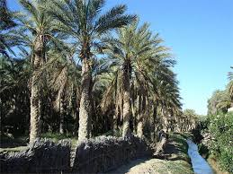
Un endroit pour découvrir l'artisanat local et la culture de la région.
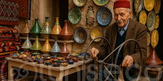
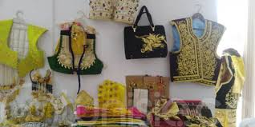
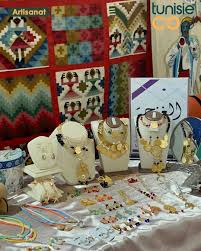
Explorez les vestiges antiques qui témoignent de l'histoire de Capsa.
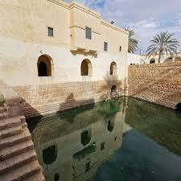
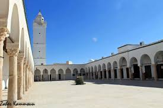
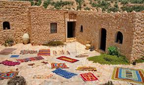
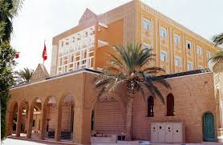